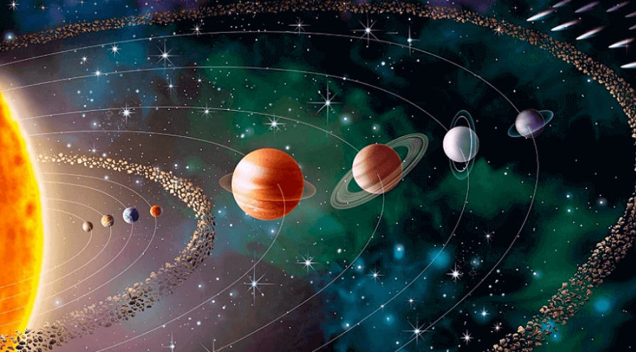

Números muy muy grandes

Si decimos que la distancia de la Tierra al Sol es de 149.597.870.700 metros estamos dando un valor que resulta excesivamente preciso por dos motivos:
a) La distancia de la Tierra al Sol es variable (depende del lugar en que la Tierra se encuentre en su órbita alrededor del Sol).
b) El cálculo de la distancia es una estimación, pues la distancia exacta no es posible calcularla. Por lo que muchas de las cifras carecen de interés.
Estos son los motivos por los que es conveniente escribir esta distancia en notación científica. Hagámoslo:
149.597.870.700 metros = 1,496 · 1011 metros
Observa que hemos tomado sólo 4 cifras significativas (con su correspondiente redondeo) y, las otras 7 cifras, quedan representadas por el exponente de la potencia de base 10.
Prueba a hacerlo tú, compara con tus compañeros/as y corrobora el resultado con el profesor/a, con el siguiente número que representa toda la superficie terrestre: 510.064.471,9 Km2
Números muy muy pequeños
El peso de una célula es de 0,000000003 gramos
Obviamente, este número hemos de expresarlo en notación científica. Quedaría así:
0,000000003\ gramos\ =\ 3 \cdot\ 10^{-9}\ gramos
Observa que el exponente de la potencia de base 10 es negativo. Eso quiere decir que hemos de dividir el 3 nueve veces entre diez para obtener el número inicial.
3\ \cdot\ 10^{-9}\ =\ \frac{3}{10\cdot10\cdot10\cdot10\cdot10\cdot10\cdot10\cdot10\cdot10\cdot}=0,000000003\ gramos
Prueba a hacerlo tú, compara con tus compañeros/as y corrobora el resultado con el profesor/a, con el siguiente número que representa el diámetro de un virus: 0,00000001 m
{kind=link}
{kind=link}
{kind=link}